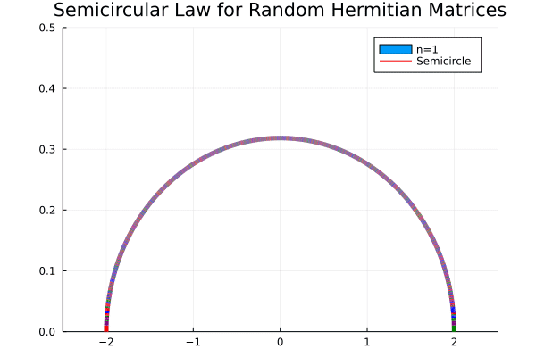

Under construction
Hermitian
RandomMatrix.randHermitian — FunctionrandHermitian(d, n; diag, norm )
randHermitian(n; norm)d: entry distributionn: dimensionsnorm: defaultfalse, ifnormset totrue, then the matrix will be normalized with $n^{-1/2}$.diag: defaultdiag = d, diagonal entry distribution. To use a different distribution (say Circular(2)) for digonal elements, setdiag = Circular(2). The diagonal entries will always be forced to have imgainary part0.- See also
GUE
Examples
Generates a 2 by 2 random Hermitian matrix with off-diagonal entries from the Standard Complex Gaussian, and Standard Normal on the diagonal.
randHermitian(2)
2×2 Hermitian{ComplexF64, Matrix{ComplexF64}}:
0.382095+0.0im -0.708469-0.0636734im
-0.708469+0.0636734im 0.336952+0.0imGenerate a 3 by 3 Hermitian matrix, with off-diagonal entries Circular(1) and diagonal entries uniformly -1 or 1.
randHermitian(Circular(1),3,diag = (-1,1))
3×3 Hermitian{ComplexF64, Matrix{ComplexF64}}:
1.0+0.0im 1.56259-0.676099im 1.39468-0.295073im
1.56259+0.676099im -1.0+0.0im 1.53369+0.296583im
1.39468+0.295073im 1.53369-0.296583im -1.0+0.0imGenerate a random 2 by 2 Symmetric Matrix with entries Poisson(2) rvs. This is also be done with randSymmetric(Poisson(2),3)
randHermitian(Poisson(2),3)
3×3 Hermitian{Int64, Matrix{Int64}}:
3 1 0
1 1 2
0 2 1Entries uniformly from $\{1,2,3,...,10\}$
randHermitian(1:10,2)
2×2 Hermitian{Int64, Matrix{Int64}}:
10 7
7 6Entries either -1 or pi with equal probability
randHermitian([-1,pi],3)
3×3 Hermitian{Float64, Matrix{Float64}}:
3.14159 -1.0 -1.0
-1.0 -1.0 3.14159
-1.0 3.14159 3.14159Symmetric
RandomMatrix.randSymmetric — FunctionrandSymmetric(d, n; Diag, norm)
randSymmetric(n; norm)d: entry distributionn: dimensionsnorm: defaultfalse, ifnormset totrue, then the matrix will be normalized with $n^{-1/2}$.diag: defaultdiag = d, the distribution for diagonal entries. To use a different distribution (say Binomial) for digonal elements, setdiag = Binomial(1,0.5)- See also
GOE
Examples
Generates a 3 by 3 random Symmetric matrix with entries from the Standard Gaussian.
randSymmetric(3)
3×3 Symmetric{Float64, Matrix{Float64}}:
-0.230698 -1.72846 0.306362
-1.72846 0.0845915 -0.0116108
0.306362 -0.0116108 -0.559046Elliptic Matrices
RandomMatrix.randElliptic — FunctionrandElliptic(d, n; r , diag, norm)
randElliptic(n; r, norm)d: defaultNormal(), entry distributionn: dimensionsr: default0.5, the correlation of $H_{ij},H_{ji}$ pairsnorm: defaultfalse, ifnormset totrue, then the matrix will be normalized with $n^{-1/2}$.diag: defaultdiag=d, the distribution for diagonal entries.
Examples
Generate a random elliptic matrix, with entries from $\mathscr{N}(0,1)$ and $\rho(H_{ij},H_{ji})=0.5$
randElliptic(500)
500×500 Matrix{Float64}:
2.03417 -0.424289 1.28267 … -0.114754 -1.96059
0.44479 -1.45563 1.32828 1.00149 0.45786
1.56525 0.0832211 -0.186738 -1.3914 1.04151
-0.11633 -0.483301 -1.81348 -1.57536 0.514818
⋮ ⋱
1.24274 -0.411623 -1.04984 -0.812778 -1.84479
-0.0817287 -0.254886 0.674914 0.756269 -0.0296209
-1.48281 0.51675 -1.58041 0.156923 0.244599
0.852339 1.04593 -0.119082 1.43634 0.114493Generate a normalized random elliptic matrix, with entries Poisson(10) and $\rho(H_{ij},H_{ji})=0.1$
using Distributions
randElliptic(Poisson(10),500, r=0.1 , norm=true)
500×500 Matrix{Float64}:
0.268328 -0.0413153 -0.0175096 … 0.0190835 0.0201304
-0.00599949 0.447214 -0.0175878 0.0112805 0.100704
-0.0258879 0.0219927 0.402492 -0.04749 -0.050853
0.0219071 0.0119609 -0.00448502 0.0043233 0.0404757
⋮ ⋱
-0.0145467 0.0800297 0.00247891 0.0189267 0.071565
0.016412 0.0334019 0.0663348 -0.0180889 0.023773
-0.0485914 -0.0575288 -0.0409827 0.491935 -0.0969691
0.0405447 0.0503843 0.00624668 0.0558304 0.402492
(This is a old typo) See randElliptic for more details.
RMT: Semicircle Law
The semi-circular law, lecture notes by Terence Tao

RMT : Elliptic Law
THE ELLIPTIC LAW by NGUYEN and O’ROURKE